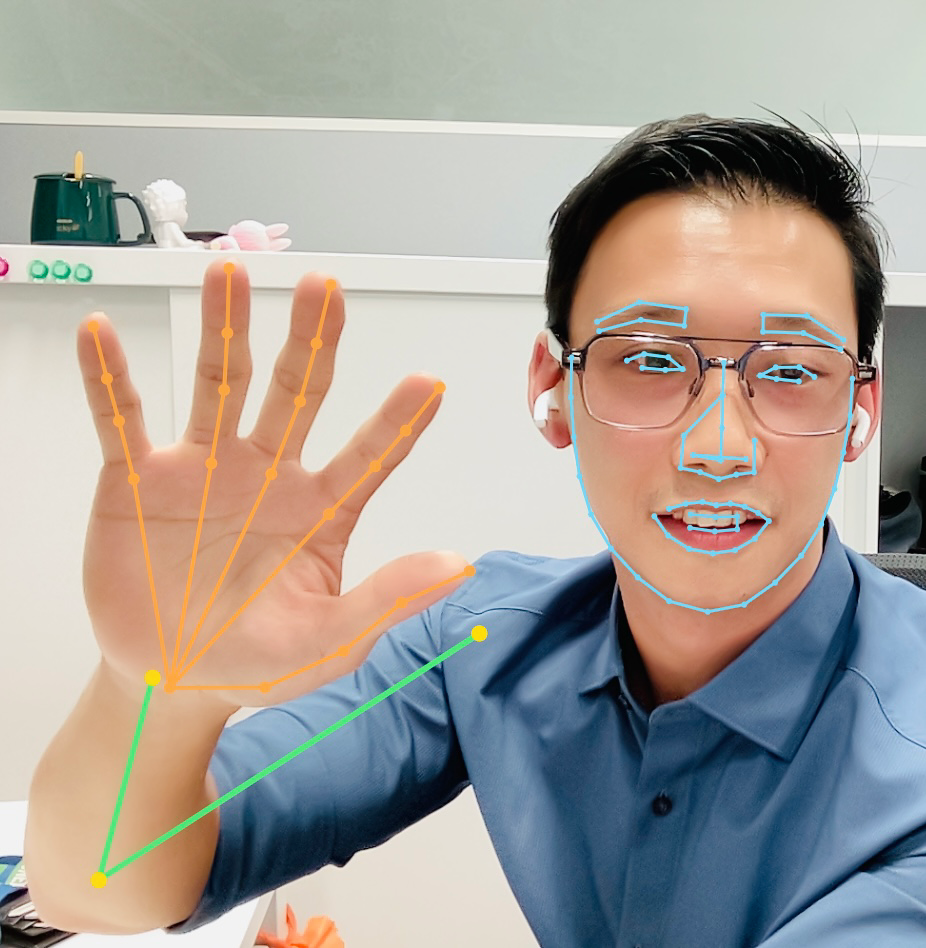
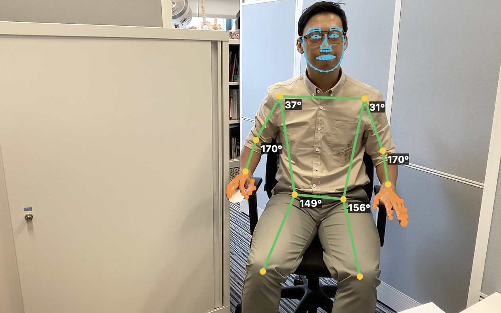

This week, I built a low-budget AI movement-tracking prototype.
I’m a physiotherapy educator. I have no IT background. Yet here I am, watching a system I helped create follow my movements on screen.
Movement tracking is nothing new. What feels new to me is who can now build a working prototype—and how little equipment or upfront spending it can take to get started.

I’m proud of this. It took time, patience, repeated attempts and plenty of things that didn’t work. AI helped me bridge technical gaps that would previously have stopped me from trying.
The idea, the questions and the decisions were still mine. AI gave me a way to turn them into something I could test.
That is where I see its value as a facilitator. Someone with knowledge of a problem, but limited programming skills, can now take a meaningful first step towards building a solution.
A working demonstration still needs testing. Lines following a body on screen do not, by themselves, prove that the measurements are accurate or useful. Professional expertise remains valuable.

But the cost of exploring an idea is changing.
Previously, I might have needed to commission development before finding out whether an idea was worth pursuing. That meant committing both time and money. With this basic setup, my main investment has been time. If an experiment fails, I can learn from it and try again without the same upfront financial commitment.
Technology is becoming more accessible, more affordable and easier for people like me to build with.
I’m keeping the next step under wraps for now.
For the moment, I’m enjoying a thought that would once have felt rather unlikely:
“I wonder whether I could build that.”
And then actually trying.